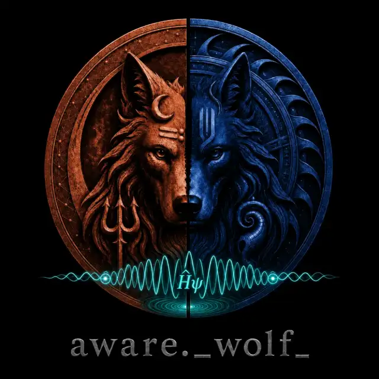

the lab
What is actually known, with the caveats out loud. Journal + year on screen, every time.

a bridge between the lab and the mat, built through aware presence — the secret sauce for getting better at anything.
three pillars
What is actually known, with the caveats out loud. Journal + year on screen, every time.
Practice explained plainly and tested honestly. Sanskrit with translation, scripture with chapter and verse.
Sport, music, dance, full attention. The proof that presence is not solemn. This earns the right to the other two.
two doors
manifesto